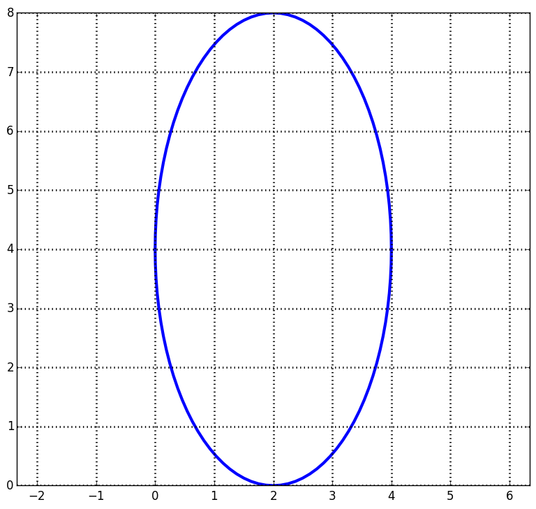

| « 9.2 | up | 9.4 » |
9.3 — The Ellipse

An ellipse is the intersection of a plane and a conic as shown above. In the x-y plane, it is defined as the set of all points whose distances from two fixed points called the foci sums to a constant value.
Equations and Such
We will focus on ellipses whose major axis is parallel to either the x or y axis only. In either case, the equation of an ellipse is given by: $$ \frac{(x-h)^2}{a^2} + \frac{(y-k)^2}{b^2} = 1 $$
|
|
Find the equation for the conic section plotted below:

$\displaystyle x^2 + \frac{y^2}{4} = 1
Determine the equation of an ellipse with center $(0,0)$, focus at $(2,0)$, and vertex at $(-5,0)$.
$\displaystyle \frac{x^2}{25} + \frac{y^2}{21} = 1$
Find the vertices of the ellipse given by $\displaystyle \frac{(x+7)^2}{3} + \frac{(y+3)^2}{4} = 1$.
$(-7, -3 \pm 2)$
Determine the equation of an ellipse with center at $(0,0)$, focus at $(0,-8)$, and vertex $(0,10)$. Solve for $y^2$.
$\displaystyle y^2 = 100(1-\frac{x^2}{36})$
Find the foci for an ellipse given by $\displaystyle \frac{(x-5)^2}{8} + \frac{(y+4)^2}{9} = 1$.
$(5,-4\pm 1)$
Plot the graph of $\displaystyle \frac{(x-3)^2}{9} + \frac{(y+2)^2}{4} = 1$.
Find the equation of the following conic:

$\displaystyle \frac{(x-2)^2}{4} + \frac{(y-4)^2}{16} = 1$